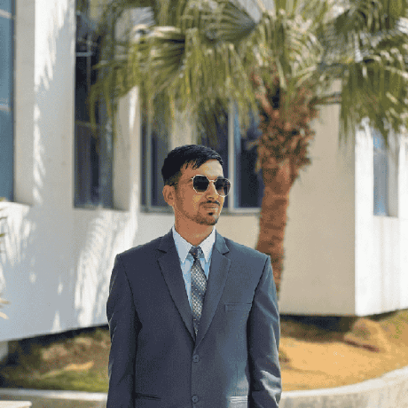

NEPAL · THAILAND · ASIAN INSTITUTE OF TECHNOLOGY
Understanding water.
Anticipating extremes.
I'm Pratik Khanal, a water resources engineer connecting satellite observations, physical models and machine learning to understand flood and drought risk.
M.Eng. researcher, Water Engineering & Management · Registered Civil Engineer

01 / CURRENT INVESTIGATION
From satellite observations
to drought understanding.
At AIT, I am working on satellite-informed correction of Noah-MP outputs and investigating flash drought in Thailand.
Read the research scope ↗Ongoing research. Historical reconstruction is model-based; satellite observations do not span the entire target period.
02 / RESEARCH & PROJECTS
Science built to be explored.
03 / EXPERIENCE
Research, engineering
& the field.
From citizen science sediment monitoring in Nepal to urban flood hazard mapping in Thailand.
04 / EDUCATION & EXPERTISE
Asian Institute of Technology
M.Eng. · Water Engineering and Management
Aug 2025-Present · Thailand
3.88/4.00 GPA, first semester · GWSC and AIT scholarship
Tribhuvan University
B.E. · Civil Engineering
Himalaya College of Engineering · 2019-2024
85.05% aggregate · Faculty Topper · University Third Rank · Four-year merit scholarship
05 / PUBLICATIONS
Peer-reviewed contributions.
06 / LET'S CONNECT
Working on water
and climate risk?
I'm interested in hydrological research, flood and drought early warning, Earth observation and scientific software.
khanalpratik55@gmail.com ↗